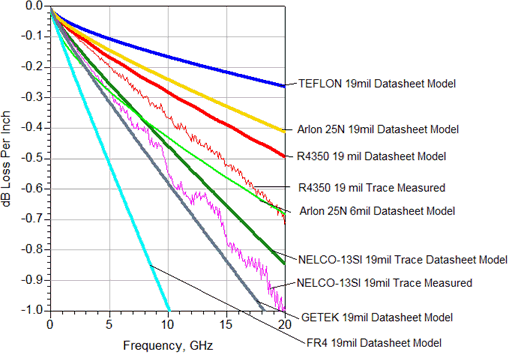

PCB dielectric materials
Choosing the best suited dielectric material for your high-speed board means balancing cost vs. quality. The table and graphic below compare some dielectric materials.
Material |
Relative Permittivity |
TanD (1 GHz) |
TanD (10 GHz) |
Cost factor |
|---|---|---|---|---|
FR4 |
4.4 |
0.018 |
N/A |
1 |
NELCO 4000-13 SI |
3.4 |
0.008 |
0.008 |
1.5 |
NELCO 6000 |
3.5 |
0.0018 |
0.002 |
1.75 |
KYOCERA PPE |
3.5 |
0.0018 |
0.002 |
2 |
ROGERS 4350 |
3.5 |
0.0031 |
0.0037 |
2.1 |
TEFLON GLASS |
2.4 |
N/A |
0.0014 |
2 |
TEFLON CERAMIC FILLED |
2.98 |
0.004 |
0.0025 |
2 |
SPEEDBOARD C |
2.6 |
0.004 |
0.004 |
2 |
ARLON 25N |
3.38 |
-- |
0.0025 |
2 |

Teflon based material has excellent electrical performance, but due to manufacturing difficulties it is typically used for microstrip designs only.
A good compromise for high-speed DUT boards is a hybrid stackup. High-speed signals would be routed on layers of a high-performance dielectric material, and the low-speed signals and power planes on layers of a low cost dielectric material.
For more detailed information on dielectric materials you may refer to:
Richard K. Ulrich, William D. Brown, eds., "Advanced Electronic Packaging", 2nd edition 2006, Wiley-IEEE Press.
Functional changes
- Introduced before SmarTest 6.3.2